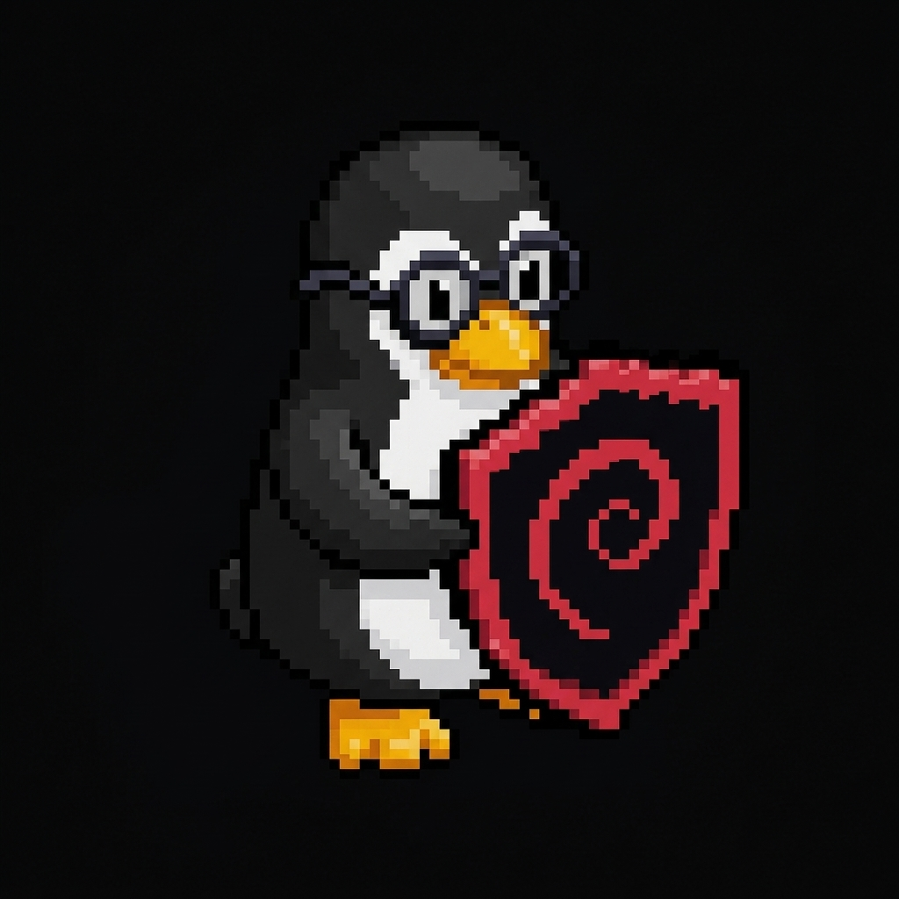
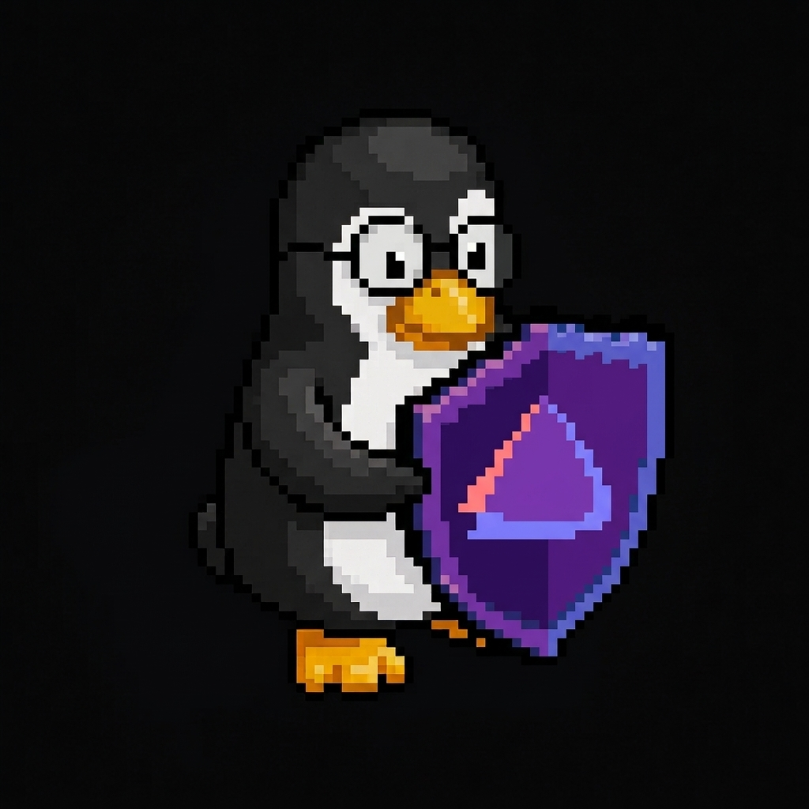

Servicios
Los servicios se acceden por nombre; Zabbix se publica directamente en el servidor de monitoreo.
Sitio principal
Activo
Este portal de la intranet, acceso por nombre o IP del servidor.
https://web.sudoers.lan
Gestión Docker
Activo
Panel web para administrar contenedores, imágenes y volúmenes.
https://portainer.sudoers.lan
Impresión
Activo
Servidor CUPS e impresora virtual PDF para el dominio.
https://print.sudoers.lan
Webmail
Activo
Correo por navegador (Roundcube) para los usuarios del dominio.
https://webmail.sudoers.lan
Archivos
Activo
Gestor web de los recursos compartidos (departamentos y respaldo).
https://archivos.sudoers.lan
Monitoreo — Zabbix
Activo
Estado de los servidores, servicios y alertas de la organización.
zabbix.sudoers.lan
Datos & Correo
Activo
PostgreSQL + Postfix/Dovecot: datos y correo interno (cuentas locales; LDAP AD en la Fase 4).
servicios internos
Equipo de administración
Grupo admins del dominio. Usuarios del area de sistemas con acceso de gestión al server.

Joaquin Diseño de infraestructura · DC, red y DNS joaquin.sudoers.lan · 192.168.0.50 Ver ficha →
David Administración del dominio · archivos david.sudoers.lan · 192.168.0.51 Ver ficha → Nicolas
Administración del dominio · base de datos
nicolas.sudoers.lan · 192.168.0.52
Ver ficha →
Nicolas
Administración del dominio · base de datos
nicolas.sudoers.lan · 192.168.0.52
Ver ficha →
Plan de red
Una sola red plana, sin necesidad de VLANs para el volumen actual.
Dirección192.168.0.0/24 · única
Gateway192.168.0.1 — router TP-Link TL-WR850N (DHCP apagado: lo maneja Kea)
Server / DC192.168.0.2 — dc1.sudoers.lan (AD, DNS, DHCP, NTP)
Monitoreo192.168.0.3 — zabbix.sudoers.lan (Zabbix server + web)
Infraestructura. 1 – .49 (reservas de infraestructura)
Equipos fijos.50 – .99 (PCs admin .50–.52 y cajas)
Pool dinámico.100 – .199 (Kea) · DNS 192.168.0.2 · dominio sudoers.lan
Tiempo (NTP)192.168.0.2 (chrony) — sincroniza la LAN y a los clientes del AD
Estado● Identidad (AD), DHCP, DNS, web, correo, impresión y archivos operativos